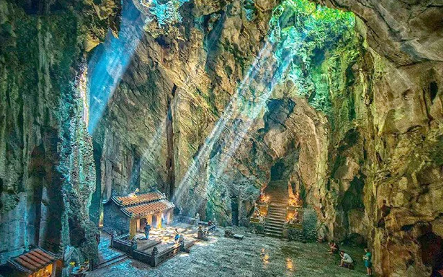
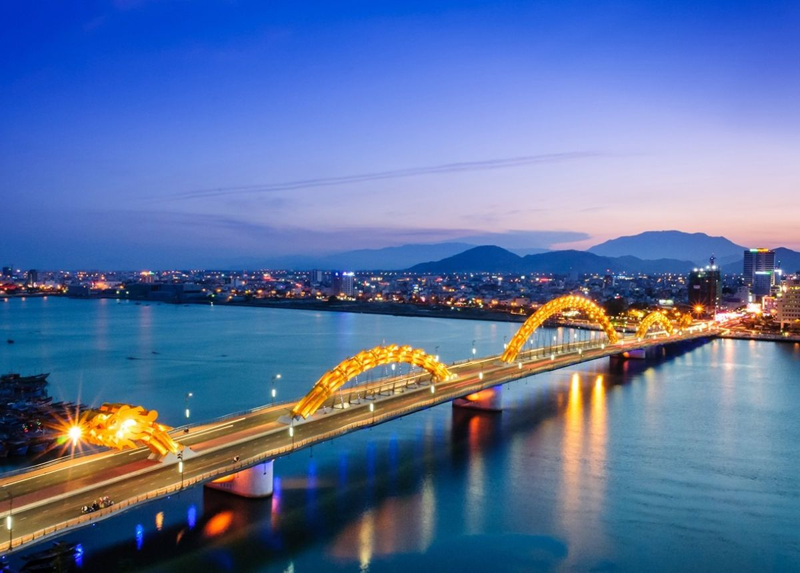

Giới thiệu chung
Thành phố Đà Nẵng (mới) được sáp nhập từ thành phố Đà Nẵng (cũ) và tỉnh Quảng Nam, là một trong sáu thành phố trực thuộc trung ương của Việt Nam, nằm tại khu vực Duyên hải Nam Trung Bộ. Đây là thành phố lớn nhất của Việt Nam, đóng vai trò là trung tâm chính trị, kinh tế - xã hội lớn của miền Trung và là hạt nhân quan trọng trong Vùng kinh tế trọng điểm miền Trung.
- Diện tích: 11.859,6 km². Địa hình thiên nhiên đa dạng, có biển, bán đảo, đảo, vùng vịnh, đồi núi, sông, suối, đồng bằng.
- Dân số: Khoảng 2,8 triệu người
- Số đơn vị hành chính: 94 đơn vị hành chính cấp xã, trong đó: 23 phường, 70 xã và 01 đặc khu.
Dân tộc
Người Kinh ở thành phố Đà Nẵng chiếm đa số khoảng 93% dân số, các dân tộc thiểu số chiếm số ít tiêu biểu như người Hoa, Cơ Tu, Xơ Đăng, Giẻ Triêng, Co,…
Vị trí địa lý
- Phía Đông:Giáp Biển Đông.
- Phía Tây: Giáp nước Lào.
- Phía Nam: Giáp tỉnh Quảng Ngãi.
- Phía Bắc: Giáp thành phố Huế.
Đặc điểm văn hóa
Văn hóa Đà Nẵng mang nhiều đặc trưng riêng, nổi bật với sự kết hợp hài hòa giữa truyền thống và hiện đại, sự hòa quyện, giao thoa giữa văn hóa Sa Huỳnh, Chăm Pa và Đại Việt, thể hiện rõ nét qua các di sản văn hóa vật thể và phi vật thể độc đáo. Đà Nẵng còn là thành phố của những cây cầu độc đáo, của lễ hội pháo hoa quốc tế.
- Làng nghề truyền thống: Làng đá mỹ nghệ Non Nước, Làng nước mắm Nam Ô, Làng bánh tráng Túy Loan, Làng chiếu Cẩm Nê, Làng bánh khô mè Cẩm Lệ, Làng gốm Thanh Hà, Làng mộc Kim Bồng, Làng đúc đồng Phước Kiều, Làng chiếu cói Bàn Thạch, Làng dệt lụa Mã Châu, Làng rau Trà Quế,…
- Món ăn đặc sản nổi bật: Mì Quảng, bánh tráng cuốn thịt heo, bún chả cá, gỏi cá Nam Ô, cao lầu, cơm gà Tam Kỳ, bê thui Cầu Mống, …
- Lễ hội truyền thống:Lễ hội pháo hoa quốc tế Đà Nẵng, Lễ hội Quán Thế Âm, Lễ hội Cầu Ngư, Lễ hội Đình làng Túy Loan và Lễ hội Đình làng An Hải, Lễ hội Bà Thu Bồn, Lễ hội Bà Phường Chào, Lễ rước Cộ Bà Chợ Được, Lễ hội Tết Nguyên tiêu Hội An, Lễ hội Tết Trung thu Hội An, Lễ hội làng gốm Thanh Hà, Lễ tế cá Ông, …
- Di tích lịch sử – danh lam thắng cảnh: Ngũ Hành Sơn, bán đảo Sơn Trà, Khu du lịch Bà Nà Hills, cầu Rồng, cầu sông Hàn, bãi biển Mỹ Khê, Phố cổ Hội An, Thánh địa Mỹ Sơn, Cù Lao Chàm,…


Đặc điểm kinh tế
Đà Nẵng sở hữu hệ sinh thái du lịch biển – đảo, du lịch núi rừng, văn hóa – tâm linh, di sản – đô thị cổ, sinh thái – nông nghiệp, nghỉ dưỡng cao cấp… Đây là sự kết hợp hoàn hảo giữa lợi thế biển – đồng bằng – cao nguyên, hội tụ hai di sản thế giới là phố cổ Hội An và thánh địa Mỹ Sơn, tạo thế mạnh phát triển dịch vụ du lịch của thành phố.